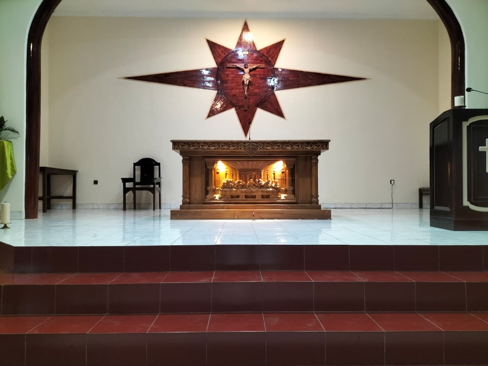
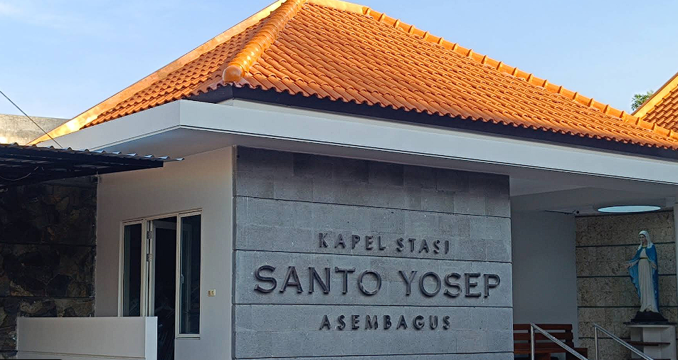

SELAMAT DATANG
DI
SELAMAT DATANG
DI
Jika Anda membutuhkan informasi lebih lanjut atau ingin bertanya, silakan hubungi kami melalui informasi di bawah ini:
Alamat: Jl. Raya Asembagus No. 123, Kota Situbondo, Provinsi Jawa Timur
66XG+WQ2, Trigonco Utara, Trigonco, Kec. Asembagus, Kabupaten Situbondo, Jawa Timur 68373